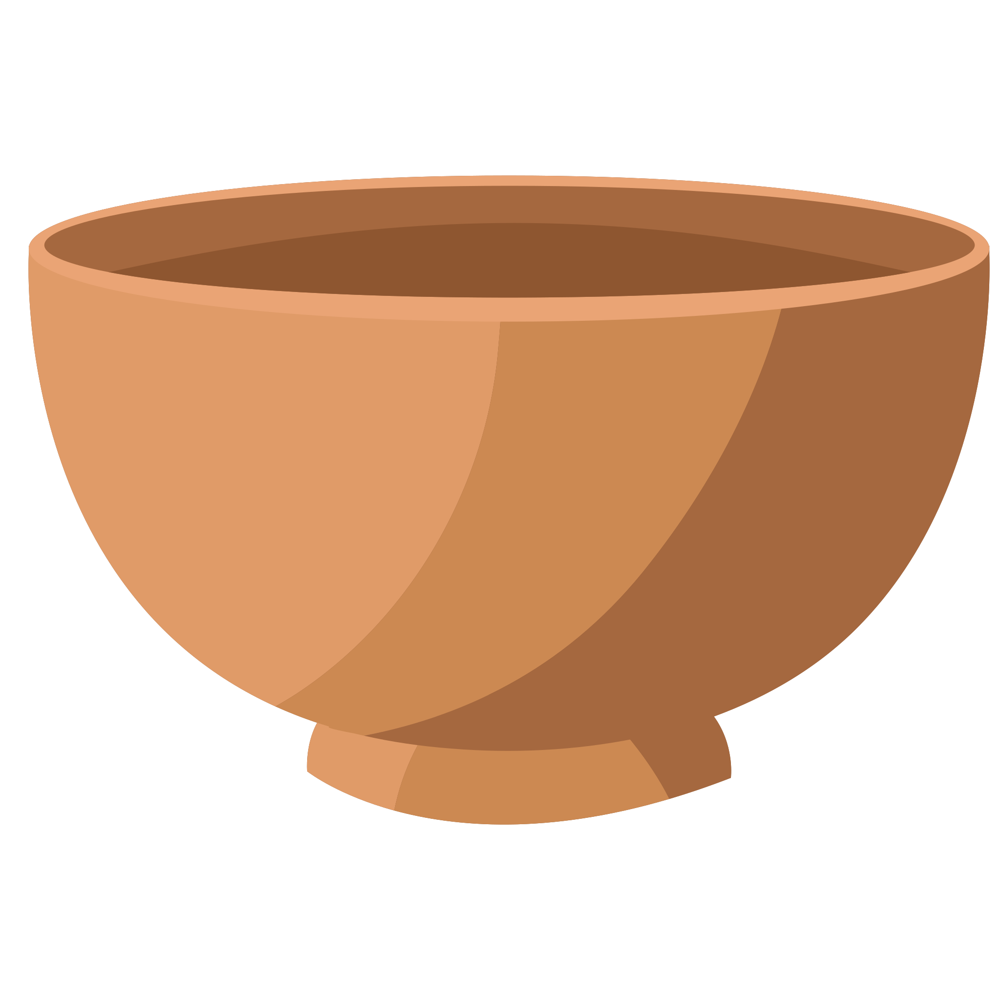
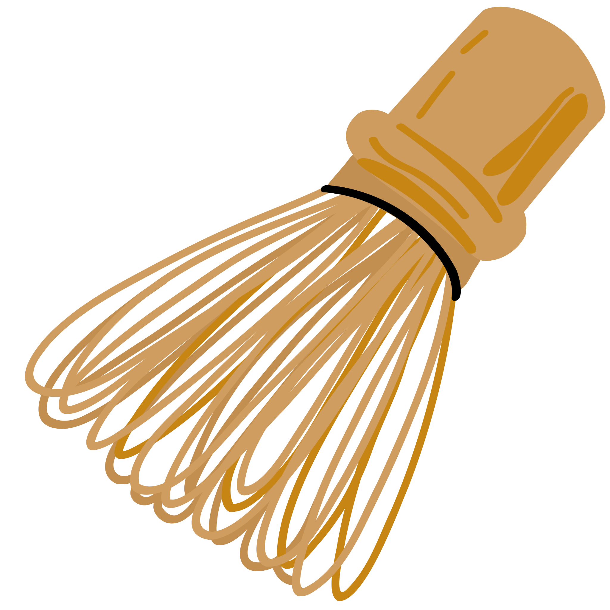
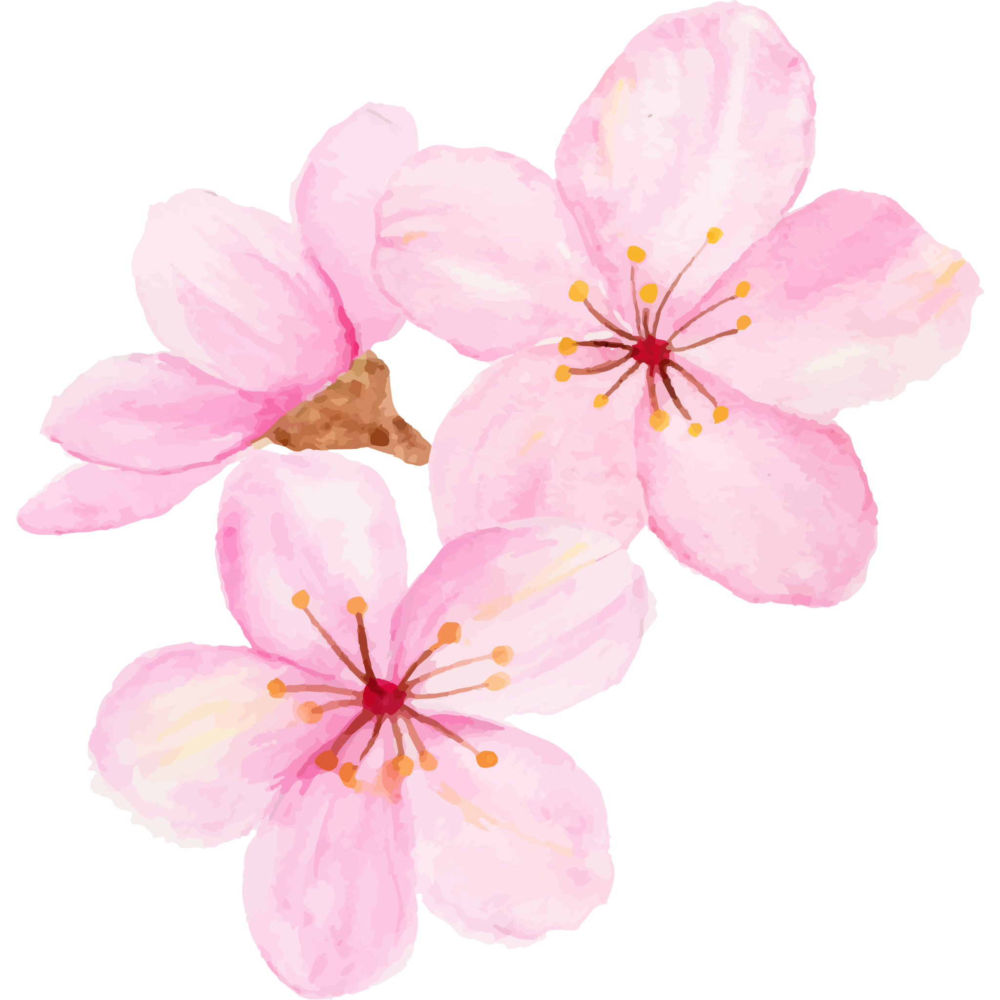

Matcha! Matcha! is a fast, light, and strategic card‑matching game for 1–6 players. Predict whether the next card will Match or No Match, build points, and decide when to bank them before luck runs out! After two rounds, the player with the highest score wins.
The deck contains several types of cards:

Cup,
Whisk, Teapot,
BlossomEarn the most points by predicting Match or No Match, banking wisely, and managing your steeped cards. The player with the highest total score after two rounds wins.
When a card is drawn, compare it to all cards on the table.
You may bank only after making your first guess.
Banking gives:
Banking ends the turn and secures your points. In Score Token modes, banking also awards a token equal to the points banked (if available).
Steeping lets you save up potential points for later. When you steep:
Steeping is a great way to build larger future banks—but risky if the pot is lost later.
Bank any total (after your first guess). No restrictions.
Banking requires collecting a unique token for the banked total (1–8). Once a token is taken, it cannot be taken again.
Same as Score Tokens, but whenever a player ends their turn with 2+ tokens, they automatically trade them for a single combined‑value token if available.
Matcha! Matcha! is played over two rounds:
Ends when fewer than 5 cards remain at the start of a turn.
Deck is reshuffled; direction reverses. Ends under the same conditions.
After two rounds, the player with the highest total score wins. Ties can be settled by rematch, high‑card draw, or snacks—your choice!
Steep boldly, match wisely, and may all your rounds be full of flavor.